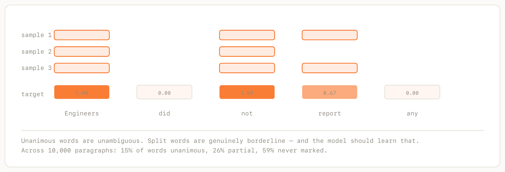

Small models · Architecture archaeology · Annotated build log
Vercel Labs shipped a syntax highlighter that is a neural network — 41k parameters, 27 KB, running as WebGPU compute shaders, with no grammar files. There is no repo and no blog post explaining it. So we decoded it from the published bundle, then pointed the same architecture at a different problem: finding the words in an English paragraph that carry its meaning.
This is the long version. It assumes you have heard of gradient descent and attention but have never written a line of PyTorch, and it explains every piece of the implementation — what the code does, why it is shaped that way, and what each number means.
What we are building, why it has to be small, and where the design came from.
You have forty unread Slack messages, six PRDs, and a research paper you want to read. The standard answer is summarization: feed it to a model, get back three sentences. Problem? Summaries are useful but it is new text. An LLM decided what mattered and then wrote fresh sentences asserting it. You cannot check the summary against the source without reading the source, which is what we were trying to avoid. Also, you get this pseudo feeling that you understood the original content without actually understanding it.
Highlighting is another answer: it selects. Every word you read is a word the author actually wrote, in the order they wrote it. There is nothing to hallucinate, because nothing is being produced. The reader's eye does the rest: you skim the marked words, and if something surprises you, the surrounding context is right there.
Figure 1. Three ways to read the same paragraph
Source: 65 words
"Hey team, heads up: the staging deploy failed twice this morning because the migration lock wasn't released. I've rolled back to build 412 and we are NOT shipping today. Ravi is looking into the lock cleanup; I'll post an update by 4pm. If you need staging urgently, ping me directly rather than retrying the deploy."
A summary: new sentences, unverifiable without the source
The staging deployment failed due to a migration lock issue. The team has rolled back and paused today's release while investigating.
Highlighted: 20% of words, all original, in order
Hey team, heads up: the staging deploy failed twice this morning because the migration lock wasn't released. I've rolled back to build 412 and we are NOT shipping today. Ravi is looking into the lock cleanup; I'll post an update by 4pm. If you need staging urgently, ping me directly rather than retrying the deploy.
What your eye actually collects
heads staging deploy failed twice. lock wasn't. rolled build 412. NOT. post 4pm.
Note what the summary dropped: build 412 and 4pm. Note what the highlighter kept: NOT.
So: a model that takes a paragraph and scores every word by how much meaning it carries. The interesting part is not whether this is possible (a large language model does it easily) but whether it can be done small enough to run on every paragraph on a page, locally, while you scroll.
If the model has to run on every paragraph as you scroll, it cannot be a round trip to a server, and it cannot be a 400 MB download.
Parameter
A single number the model learns. "39,361 parameters" means the entire behaviour of this model is determined by 39,361 numbers. GPT-4-class models have hundreds of billions. A parameter is typically stored as a 32-bit float, so 39,361 of them is about 157 KB before we compress anything.
Roughly 2,800× smaller than BERT-base. For context: a single transformer layer at d=768 is 7M parameters, and a WordPiece vocabulary alone is 23M.
gpu-lexer is by Shu Ding at Vercel Labs. They created a 41,321 parameters model for syntax highlights trained on 4,688,781 tokens, 27.4 KB minified and Brotli-compressed, 88.02% agreement with Shiki on held-out files, and support for 75+ languages from a single model.
The forward pass, end to end: text goes in, one number per word comes out that gives a confidence score of whether a word hold enough meaning to be highlighted or not.
Since I can't mind read how much you are used to neural network terminology, here's some breakdown. You can skim to portions you are confident: a neural network does not operate on text. It operates on tensors. Tensors are rectangular grids of numbers.
Tensor
An array of numbers with a shape. A list of 32 numbers is a tensor of shape(32,). A table with 100 rows of 32 numbers is(100, 32). Three of those tables stacked is(3, 100, 32). That is "tensor": a word for "n-dimensional array".
Nearly every tensor in this model has three dimensions, always in the same order:
(B, T, D)
│ │ └── D features per token — always 32. Called "d_model".
│ └───── T tokens in the sequence. A 65-word paragraph
│ is ~139 tokens, counting spaces and punctuation.
└──────── B paragraphs processed at once — the "batch".Batch
Several paragraphs are stacked and processed simultaneously. Modern hardware is far faster at one big matrix multiply than at 32 small ones. We use batches of 32.
Paragraphs have different lengths, so they are padded to a common length with filler, and the filler is masked out so it cannot affect the real answers.
So the entire forward pass is a sequence of shape transformations. Here is the whole model as shapes:
Figure 4 — The shape of the computation
shape actual why that number
text "Engineers did not…"
↓ tokenize
tokens [Engineers][ ][did]… 139 tokens
↓ extract features
rows (B, T, R) 32×256×R R = one row per applicable feature
↓ embedding lookup + sum
emb (B, T, 32) 32×256×32 32 = d_model, the row width
↓ local window ±2, 2 pointers
local (B, T, 32) 32×256×32
↓ forward scan ↓ backward scan
gf (B,T,32) gb (B,T,32)
↓ concatenate [local, gf, gb]
x (B, T, 96) 32×256×96 96 = 32 × 3 vectors joined
↓ gated MLP head
logits (B, T) 32×256 one raw number per token
↓ sigmoid
scores (B, T) 32×256 squashed into 0 … 1B = 32 paragraphs at a time, T = 256 tokens after padding.
R is the only entry here that is not a fixed number. A token gets one row per feature that applies to it, and different tokens have different numbers of features.
The only place integers appear is rows: those are addresses into a lookup table, not quantities. Everything from emb onward is floating point, and the shapes never change again until the head collapses 96 down to 1.
Features, rows, embeddings are covered in later sections.
A tokenizer chops text into four types of units called tokens.
def tokenize(normalized: str) -> list[RawToken]:
cps = list(normalized) # code points, so emoji behave
i = 0
while i < n:
ch = cps[i]
if ch == "\n":
tokens.append(RawToken(NEWLINE, i, i + 1, "\n"))
i += 1
elif ch in (" ", "\t"):
start = i
while i < n and cps[i] in (" ", "\t"):
i += 1
tokens.append(RawToken(SPACE, start, i, text))
elif _is_alnum(ch):
start = i; i += 1
while i < n:
c = cps[i]
if _is_alnum(c):
i += 1
# don't, state-of-the-art
elif c in ("'", "-") and _is_alnum(cps[i + 1]):
i += 1
# 1.6 and 10,000 stay whole — digits on both sides
elif (c in (".", ",")
and _is_digit(cps[i + 1])
and _is_digit(cps[i - 1])):
i += 1
else:
break
tokens.append(RawToken(WORD, start, i, text))
else:
tokens.append(RawToken(PUNCT, i, i + 1, ch))
i += 1Four classes: WORD, SPACE, NEWLINE, PUNCT. Every character ends up in exactly one token, so gluing the tokens back together reproduces the input exactly.
The two elif branches in the middle are there to decide what counts as "inside" a word. don't is one word. 1.6 is one word. But Section 1. The is not, because the period there has a space after it rather than a digit.
A model needs to turn each token into a vector: a list of 32 numbers that represents what that token is. The standard approach is a lookup table: build a vocabulary of 30,000 subwords and store a learned vector for each one.
Embedding
The vector that represents a token. "Embedding" because you are embedding a discrete thing (a word) into a continuous space (32 numbers), where distance means something: similar words end up nearby.
At 32 numbers per entry, a 30,000-word vocabulary is 960,000 parameters: 25× our budget for the lookup table alone.
Instead, each token is described by a set of hand-chosen features: what class it is, two hashes of its letters, a hash of its last three letters, whether it is a stopword, how long it is, where it sits in the sentence, and so on.
Every feature that applies to a token contributes exactly one row of a shared table, and the token's embedding is the sum of those rows.
So each feature is converted into a row number. how? every field owns a reserved block of the table, and the row number is the block's starting offset plus the field's value for that token.
Token class owns rows 0–7, because there are at most 8 classes. Hash A owns rows 8–263, because an 8-bit hash has 256 possible values. Hash B owns the next 256, and so on. It is the same layout logic as fields in a C struct: everybody gets a range, and you add the offset to the value.
Here is the real arithmetic for one real word: criticality, in the sentence "The reactor achieved criticality on Tuesday":
field value + offset = row
------------------------------------------------
token class 0 0 0
hash A 145 8 153
hash B 84 264 348
suffix hash "ity" 59 520 579
prefix hash "cri" 7 584 591
stopword bucket 0 616 616
length bucket 9 641 650
sentence position 16 657 673
document position 16 689 705
in-doc frequency 0 721 721
embedding = row[0] + row[153] + row[348] + … + row[721]
ten 32-number rows, added together, giving 32 numbersHere is every feature, how many rows of the table it owns, and why. A feature owns one row for every distinct value it can take. A feature with 16 possible values needs 16 rows, because any one of them might be the one that fires.
# feature rows range params applies to
-------------------------------------------------------------
1 token class 8 0–7 256 every token
2 hash A 256 8–263 8,192 words
3 hash B 256 264–519 8,192 words
4 suffix hash 64 520–583 2,048 words
5 prefix hash 32 584–615 1,024 words
6 stopword bucket 16 616–631 512 words
7–15 flags (nine of them) 9 632–640 288 words
16 length bucket 16 641–656 512 words
17 sentence position 32 657–688 1,024 every token
18 document position 32 689–720 1,024 every token
19 in-doc frequency 16 721–736 512 words
total 737 0–736 23,584Three features apply to every token: class, sentence position, document position. Which is why a space still gets three rows. The rest are word-only, and are omitted for punctuation and whitespace because they mean nothing there.
row = 0 + class WORD=0 SPACE=1 NEWLINE=2 PUNCT=3Straight from the tokenizer. *(There are 4 wasted rows here because we have only 4 classes. By the time I saw this unnecessary padding, I went way farther in my session.)
hashA = MIX(FNV(s, basis=2166136261, prime=16777619)) & 0xFF
hashB = MIX(FNV(s, basis=1166136321, prime=2246822519)) & 0xFF
FNV(bytes, basis, prime): standard FNV-1a
h = basis
for b in bytes: h = ((h XOR b) * prime) mod 2³²
MIX(h): xorshift-multiply avalanche
h ^= h >>> 16; h = (h * 2246822507) mod 2³²
h ^= h >>> 13; h = (h * 3266489909) mod 2³²
h ^= h >>> 16256 rows each, because 8 bits gives 256 values.
suffixHash = MIX(FNV(last 3 bytes of s, 2166136261, 16777619)) & 0x3FSame machinery, applied to the tail. This is an English part-of-speech proxy: -ing, -ion, -ly, -ed, -ness tell you a great deal about a word's grammatical role, and role correlates strongly with importance.
64 rows because 6 bits. Fewer than the surface hashes because the space being hashed is far smaller. English has dozens of productive suffixes, not tens of thousands so 64 buckets already makes collisions among the ones that matter rare.
prefixHash = MIX(FNV(first 3 bytes of s, 2166136261, 16777619)) & 0x1F32 rows because 5 bits. half the resolution of the suffix. English prefixes (un-, re-, de-, pre-) are a smaller and less informative set than suffixes, so they get a smaller budget.
rank = position of s in an ordered 201-word list, most frequent first
bucket = 0 if not in the list
bucket = min(15, 1 + rank // 16) otherwise → 1…13 in practice(16 rows because 4 bits, though only 14 are reachable: the list is 201 words, so 1 + 200//16 = 13 is the ceiling and rows 14–15 are dead.)
The important design choice here is that it is graded rather than binary. A single "is a stopword" bit would lump the together with not and but. Banding by frequency rank lets the model learn that the very top of the list is noise while the tail of it is not.
length = number of code points
bucket = first i where length <= edges[i], else 15
edges = (1, 2, 3, 4, 5, 6, 7, 8, 10, 12, 15, 19, 24, 31, 47)Note the spacing: lengths 1–8 each get their own bucket, then the bands widen. Short words are common and a single character matters down there: a versus an versus and: while at the top end 37 characters versus 38 is a distinction nobody can use.
16 rows because that is how many bands the edges define. Raw length would need 50+ rows to encode mostly-meaningless detail.
row = ROW_SENT_POS + min(31, (32 * index_within_sentence) // sentence_length)A word 5 tokens into a 10-token sentence and one 20 tokens into a 40-token sentence both land in bucket 16 since they are both halfway through. An absolute index would make short and long sentences incomparable and would need as many rows as the longest sentence.
32 rows is the chosen granularity hopefully fine enough to separate opening, middle and closing, coarse enough to stay cheap.
row = ROW_DOC_POS + min(31, (32 * token_index) // total_tokens)The same idea across the whole paragraph rather than the sentence. It exists because prose has structure: topic sentences lead, qualifications trail. Same 32 buckets, same reasoning.
count = how many times s appears in this paragraph
bucket = first i where count <= edges[i], else 15
edges = (1, 2, 3, 4, 5, 6, 7, 8, 10, 12, 16, 24, 32, 48, 64)A word repeated inside one paragraph is very often its topic. Counts 1–8 get individual buckets for the same reason lengths do — the difference between appearing once and three times is real, the difference between 40 and 48 is not.
(16 rows, of which 12 are reachable. Our paragraphs cap at 130 words, so the buckets for 33+ occurrences can never fire)
How much of that allocation is actually used?
Counting which rows ever fire across 3,000 real paragraphs: the hashes, prefix, suffix, flags and both position features use 100% of their rows. Four do not: token class uses 4 of 8, stopword 14 of 16, length 15 of 16, frequency 12 of 16.
The stopword list is 200 words long, so the bucket formula tops out at 13 and rows 14–15 can never fire. All in all ~1% of the model. Leaving as is for now.
Ten always apply to a word: class, hash A, hash B, suffix, prefix, stopword bucket, length, sentence position, document position, frequency. Each has exactly one value, so each gives exactly one row. That is why a plain word gets ten.
Nine are optional properties: the flags. Each one that is true adds its own row; each one that is false adds nothing. Here they are in full, with how often each actually fires, measured over 279,567 real word tokens:
bit row flag true when fires
------------------------------------------------------------------------------------------------
0 632 CAPITALIZED first character is uppercase and the token is not all-caps 14.0%
1 633 ALL_CAPS two or more letters and every letter is uppercase 1.2%
2 634 HAS_DIGIT contains at least one digit 2.1%
3 635 ALL_DIGITS every character is a digit 1.6%
4 636 HAS_HYPHEN contains a hyphen (U+002D) 1.1%
5 637 HAS_APOSTROPHE contains an apostrophe (U+0027) 0.8%
6 638 SENTENCE_START first word token of its sentence 6.9%
7 639 PARAGRAPH_START first word after a blank line, or of the document 1.1%
8 640 BEFORE_SENTENCE_END last word token of its sentence 5.0%Why these nine and not others? Each is a cheap surface property that correlates with importance in a way the hashes cannot express. CAPITALIZED catches proper nouns without a named-entity recognizer. ALL_CAPS catches acronyms and shouting. HAS_DIGIT and ALL_DIGITS catch quantities, which are almost always facts worth keeping. HAS_HYPHEN catches compounds like exposure-response. The three positional flags catch structure: a sentence's first and last words carry more than its middle.
Note that CAPITALIZED and ALL_CAPS are defined to be mutually exclusive: "not all-caps" is part of the first definition. That is the reason the theoretical maximum is 18 rows rather than 19: a token can never set all nine.
The important thing about the second group is that the nine are independent. A word can be all-caps and contain a digit and contain a hyphen and start a sentence, all at once, and each of those contributes separately. That is why they cannot be collapsed into a single field: encoding nine independent booleans as one value would need a row for each of the 2⁹ = 512 combinations, whereas one row per property costs nine.
This is also the real reason the embedding sums rather than concatenates. Summing accepts a variable-length set of rows without caring how many there are; concatenation would need a fixed slot for every possible feature, nearly all of them empty.
Measured on real tokens:
'criticality' 10 rows = 10 always-on + 0 flags
' ' (a space) 3 rows = 3 always-on + 0 flags (7 are word-only)
'NASA' 13 rows = 10 always-on + 3 flags
ALL_CAPS, SENTENCE_START, PARAGRAPH_START
'CIFAR-10' 15 rows = 10 always-on + 5 flags
ALL_CAPS, HAS_DIGIT, HAS_HYPHEN,
SENTENCE_START, PARAGRAPH_START
across 46,517 real words: 76.3% have no flags set at all — exactly 10 rows
15.2% have one, 6.9% two, 1.6% three or moreAll 737 × 32 = 23,584 numbers start as random noise and are adjusted by training, exactly like every other parameter in the model.
What is designed is the structure: which field owns which rows. what is learned is what those rows contain. Row 153 holds whatever turned out to be useful.
A vocabulary stores one row per word. 30,000 words, 30,000 rows, and a word you never saw during training has no row at all. This scheme stores one row per feature value, and a word is a combination of them. The two 8-bit hashes alone give 256 × 256 = 65,536 distinct identities from 512 rows.
criticality is not "row 153231". It is "the sum of rows 0, 153, 348, 579, 591, 616, 650, 673, 705 and 721", and that particular ten-way combination is effectively unique to it. The table is small because it stores properties, while the words live in the combinatorics.
What does row 153 actually mean?
Nothing you could read. Row 153 is shared by every word whose hash A happens to be 145:
criticalityand a scattering of unrelated words that collide there. It is an arbitrary group, and the model simply learns whatever is worth storing for that group.Those colliding words almost certainly differ on hash B, on length, on suffix. So the sum still separates them. Identity lives in the combination, never in any one row: which is also why summing is safe rather than lossy in practice.
One more consequence worth noticing: because nothing here is a word lookup, a word the model has never seen still gets a sensible vector. It has a length, a suffix, a capitalization pattern, a position.
Summing looks lossy because you cannot recover the ten indices from the sum. But apparently it still works. What matters is that words sharing features land near each other in the 32-dimensional space. Two words with the same suffix share a row, so they are pulled together along whatever directions that row occupies. The model learns to spread the rows out so the sums stay distinguishable where it matters.
A tensor cannot be ragged. Every row of rows has to be the same length, so R has to become a fixed number. We picked 20 and fill the unused slots with a special index whose row is permanently zero, contributing nothing to the sum.
19 features that could possibly apply
18 the most that can fire at once — CAPITALIZED and ALL_CAPS are
mutually exclusive, so never all nine flags
15 the most ever seen across ~400,000 real tokens ("CIFAR-10")
20 the array width we chose: 18 rounded up, with headroom"So 19 is a fact about the design and 18 is a fact about the features, but 20 is only a choice. It has no meaning beyond "big enough". For a typical word, ten of the twenty slots are empty, and that waste buys uniform shapes, which is what makes the arithmetic fast"
Here is the actual embedding code:
def embed(self, rows: torch.Tensor) -> torch.Tensor:
"""Feature bag: sum the rows each token selects.
(B, T, R) -> (B, T, D)
"""
return self.emb(rows).sum(dim=2)rows has shape (B, T, 20): the padded list of row numbers for each token. self.emb(rows) looks each one up, producing (B, T, 20, 32). Then .sum(dim=2) collapses the twenty-row dimension, giving (B, T, 32). Tokens that select fewer than twenty rows are padded with a special index whose row is permanently zero, so the extra terms add nothing.
dim=2
Which axis to collapse, counting from zero. Shape
(B, T, 20, 32)has axis 0 = B, axis 1 = T, axis 2 = the twenty rows, axis 3 = the 32 features. Summing over axis 2 leaves(B, T, 32). Getting these indices wrong is the single most common bug in this kind of code, which is why every function here documents its shapes.
Parameter budget · after section 06
stage parameters
-------------------------------------------
embedding table · 737 rows × 32 23,584
running total 23,584 of 39,361 · 60%After embedding, each token knows about itself and nothing else. The word "lock" has the same vector whether it is a migration lock or a bicycle lock. The next stage gives each token a peek at its neighbours.
The whole operation, for the token at position t, is this:
local[t] = tanh( bias
+ w₋₂ ⊙ emb[t-2] two to the left
+ w₋₁ ⊙ emb[t-1]
+ w₀ ⊙ emb[t] itself
+ w₊₁ ⊙ emb[t+1]
+ w₊₂ ⊙ emb[t+2] two to the right
+ v₁ ⊙ emb[first word of this sentence]
+ v₂ ⊙ emb[last word of previous sentence] )Eight vectors of 32 numbers, blended together and squashed. The ⊙ is an elementwise multiply, explained in a moment.
The seven w and v vectors, plus the bias, are parameters in the same sense as the 737-row embedding table: they start as random noise and are moved by gradient descent.
local_bias (32,) 32 parameters
local_win (5, 32) 160 parameters one 32-vector per window position
local_ptr (2, 32) 64 parameters one 32-vector per pointer
───
256 parameters 0.65% of the modelThe key property is that a window weight is tied to a relative position, not to a token. There is exactly one w₋₂ in the whole model, and it means "how should the thing two places to my left influence me". It is learned once from all 10,000 training paragraphs and then applied at every position of every document. The window does not belong to any token, it is a rule about neighbourhoods.
Because there are only eight of them, we can simply look. Here is the RMS magnitude of each learned vector in the shipped model: how loudly each position gets to speak:
t-2 two left 0.498 ##########################
t-1 one left 0.545 ############################
t itself 0.796 ########################################
t+1 one right 0.660 #################################
t+2 two right 0.349 ##################
ptr first word of sentence 0.110 ######
ptr last word of prev sent 0.105 #####
bias 0.070The model decided a token should listen to itself most, then to its immediate neighbours, then less to those further out: a 2.3× falloff from centre to two-away. It also weighted the word to the right above the word to the left, which is a reasonable thing to learn about English, where a noun is qualified by what follows it.
The pointers are barely used
Look at the bottom two rows: 0.11 against 0.80 for the centre.
That is consistent with the later experiments, where widening the window from ±2 to ±4 also made no difference. Both say the same thing: for prose salience the useful local signal lives in the immediate neighbours, and everything beyond that is better handled by the scan.
def local(self, emb, ptrs):
b, t, _ = emb.shape
half = (self.config.window - 1) // 2 # window=5 → half=2
out = self.local_bias.expand(b, t, d).clone()
padded = F.pad(emb, (0, 0, half, half)) # 2 zero tokens each end
for k in range(self.config.window):
out = out + self.local_win[k] * padded[:, k : k + t]
for p in range(self.config.ptrs):
idx = ptrs[:, :, p]
valid = (idx >= 0).unsqueeze(-1)
gathered = _gather_seq(emb, idx.clamp(min=0))
out = out + self.local_ptr[p] * torch.where(valid, gathered, zeros)
return torch.tanh(out)The loop is a sliding window done without a loop over positions. Padding the sequence with two zero tokens at each end means padded[:, k : k + t] is the whole sequence shifted by k − 2 positions. So k=0 gives every token's neighbour two to the left, k=2 gives the token itself, k=4 gives two to the right. Five shifted copies, each scaled by its own learned weight vector, added together.
Elementwise multiply
self.local_win[k]is 32 numbers, and it multiplies a(B, T, 32)tensor. This is not a matrix multiply: feature 0 is scaled by weight 0, feature 1 by weight 1, and so on, independently. It costs 32 parameters per window position instead of 32×32 = 1,024.
The second loop handles the pointers. ptrs carries two token indices per position: the first word of the current sentence and the last word of the previous one: or -1 where there is none, which the torch.where turns into a zero contribution. gpu-lexer used the same mechanism pointing at line starts and matched delimiters.
tanh
A squashing function. Takes any number and returns something between −1 and +1, smoothly, with zero mapping to zero. Without something like this, stacking layers would be pointless: a chain of additions and multiplications collapses into a single linear operation no matter how many you stack. The squash is what makes depth mean anything.
Parameter budget · after section 07
stage parameters
-------------------------------------------------------------
embedding table 23,584
local window · bias 32 + window 160 + pointers 64 256
running total 23,840 of 39,361 · 61%A five-token window is not enough. Whether a word matters depends on the entire paragraph. Attention solves this and costs O(n²) comparisons and a lot of parameters.
gpu-lexer's answer is a learned parallel prefix scan. Start with the idea of running state through the sequence:
state = 0
for each token i:
state = z[i] * state + w[i]
output[i] = state
where c[i] = what token i proposes the state should become
z[i] = how much of the old state to keep (0 … 1)
w[i] = (1 - z[i]) * c[i] ← what actually gets writtenThis is a minimal recurrent network. state is a running summary of the paragraph so far, and every token gets to modify it: keep some of what was there, overwrite the rest with its own proposal. After the loop, output[i] summarizes everything up to position i.
Substituting w back in shows that the update really is a weighted average whose two weights sum to 1:
state = z · state + (1 − z) · c
└─ keep ─┘ └─ overwrite ─┘
z = 0.9 → keep 90% of the old state, accept 10% of the proposal
z = 0.1 → keep 10%, accept 90% — effectively a resetThat is why the state can never grow without bound: nothing is ever simply added, only blended. w exists as a separate name purely because the scan machinery in the next section wants a single additive term: it is (1 − z) · c precomputed once per token, not a third idea.
The loop above still treats z and c as though they arrive from nowhere. They do not, and this is the step that was missing.
They are computed, per token, from that token's local vector. Two small learned layers do it and those layers, not z and c themselves, are the parameters:
class ScanBlock(nn.Module):
def __init__(self, d):
self.wz = nn.Linear(d, d) # -> z, the update gate 1,056 params
self.wc = nn.Linear(d, d) # -> c, the candidate 1,056 params
def forward(self, h, lengths):
z = torch.sigmoid(self.wz(h)) # (B,T,32), each in 0…1
candidate = torch.tanh(self.wc(h)) # (B,T,32), each in -1…1
w = (1 - z) * candidate
return blelloch_scan(z, w, self.up, self.down)wz is the projection that produces z, the update gate. wc is the projection that produces c, the candidate.
Gate and candidate
c, the candidate, is what this token would like the running state to become: its proposal, computed from its own features alone, ignoring history.
z, the update gate, decides how much of that proposal is accepted. It is 32 independent knobs, one per channel. Near 1: "keep the old state, ignore the proposal." Near 0: "throw the old state away and take the proposal instead."
So z, c and w are not parameters. They are recomputed for every token of every paragraph. The things actually being learned are the two matrices wz and wc.
Averaging z over 78,711 real tokens, channel by channel, shows something nobody designed. A gate of z means influence decays by a factor of z per token, so log(0.5)/log(z) is the number of tokens until a contribution has faded by half — an effective memory length:
channel mean z half-life (tokens until influence halves)
5 0.450 0.9 ← forgets almost immediately
3 0.460 0.9
30 0.517 1.1
…
2 0.822 3.5
9 0.823 3.6
…
26 0.930 9.5
28 0.937 10.6
27 0.986 50.5
29 0.990 67.4 ← remembers the whole paragraphThe 32 channels spread themselves across a 78× range of memory lengths. Some forget within a single token. Others hold on for 67, which is most of a paragraph.
That is the model solving a problem it was never told about. Whether a word matters depends on both the immediate phrase and the overall topic, and with 32 independent channels it can track both at once: fast channels carry what just happened, slow channels carry what the paragraph is about. Nothing in the architecture asked for a range of timescales — it simply turned out to be the useful thing to learn.
The trouble is the word for. Token 200 cannot be computed until token 199 is done, because it needs the state token 199 produced. On a 256-token paragraph that is 256 strictly sequential steps, mean cores sitting idle waiting their turn.
Note that z and w are not the bottleneck. Every token's z and w can be computed simultaneously, because each depends only on that token's own local vector. It is purely the accumulation of state that is serial.
Two consecutive steps can be collapsed into one. If step A is (z_A, w_A) and step B is (z_B, w_B), then doing A then B is the same as doing a single combined step:
combined_z = z_A · z_B
combined_w = w_B + z_B · w_ABecause pairs can be merged, you can merge them in a tree instead of a chain. That is what Blelloch's algorithm does, in two passes: an up-sweep that merges pairs, then pairs of pairs, then pairs of those, building partial totals up a binary tree; and a down-sweep that pushes the accumulated prefixes back down.
Worked example
Say the four steps are
(z,w)= (0.5, 2), (0.5, 4), (0.5, 6), (0.5, 8). The sequential loop gives states 2, 5, 8.5, 12.25.The tree does it in two levels instead of four steps. Up-sweep merges (1,2) and (3,4): the first pair becomes
z = 0.25, w = 4 + 0.5·2 = 5. Down-sweep then hands that merged total to the right half as its starting prefix, so tokens 3 and 4 do not wait for tokens 1 and 2 to finish — they wait only for the merge.Four tokens: 2 levels instead of 4 steps. 256 tokens: 8 levels instead of 256 steps. 4,096 tokens: 12 levels. The depth grows logarithmically, and every merge within a level happens simultaneously.
Here is the up-sweep, which is the whole algorithm in eight lines:
tree_z, tree_w = [z], [w]
for level in range(levels):
cz, cw = tree_z[level], tree_w[level]
g = torch.sigmoid(up[min(level, LEVELS - 1)])
# 0::2 = every left child, 1::2 = every right child
pz, pw = _combine(cz[:, 0::2], cw[:, 0::2],
cz[:, 1::2], cw[:, 1::2], g)
tree_z.append(pz)
tree_w.append(pw)cz[:, 0::2] is "every other element starting at 0": all the left children at once. cz[:, 1::2] is all the right children. One call to _combine merges every pair at this level simultaneously. The loop runs log₂(T) times, not T times.
A prefix scan only looks left. For syntax highlighting that is mostly fine. For prose, whether a word matters often depends on how the sentence ends. So we run the scan twice. once forward, once over the reversed sequence and concatenate.
gf = self.fwd(local, lengths) # left context
rev = _reverse_index(local.shape[1], lengths)
gb = _gather_seq(self.bwd(_gather_seq(local, rev), lengths), rev)_reverse_index is fiddlier than it looks. You cannot simply flip the tensor, because that would drag the padding from the end into the middle of the sequence, where the scan's guarantees no longer hold. It reverses only the real tokens and leaves the padded tail alone — and because that mapping is its own inverse, the same index tensor un-reverses the result.
Parameter budget · after section 08
stage parameters
---------------------------------------------------------------------
embedding table 23,584
local window 256
scan · 2 dirs × (wz 1,056 + wc 1,056 + up 384 + down 384) 5,760
running total 29,600 of 39,361 · 75%By now every token has three 32-number vectors: what it is locally, what came before, what comes after. The head turns those 96 numbers into one.
x = torch.cat([local, gf, gb], dim=-1) # (B, T, 96)
gate = torch.sigmoid(self.head_gate(x)) # (B, T, 16)
hidden = torch.tanh(self.head_hid(torch.cat([x, gate], dim=-1)))
return self.head_out(hidden).squeeze(-1) # (B, T)Linear layer
nn.Linear(96, 16)is a matrix multiply plus an offset: 16 outputs, each a weighted sum of all 96 inputs, plus a bias. That is 96×16 + 16 = 1,552 parameters. It is the basic building block — almost everything else is plumbing around these.
The middle line is the "gated" part. Sixteen numbers are computed, squashed to 0–1 by sigmoid, and appended to the input before the main hidden layer. It lets the network compute a few cheap summary flags first and condition the rest on them
Logit
The raw, unsquashed output. It can be any number: −4.2, 0.0, 7.9. To turn it into a probability you apply
sigmoid, which maps it into 0–1: sigmoid(0) = 0.5, sigmoid(2) ≈ 0.88, sigmoid(−2) ≈ 0.12.Models emit logits rather than probabilities because the loss function is both more accurate and more numerically stable when it does the squashing itself. You will see
binary_cross_entropy_with_logitslater — the "with_logits" is exactly this.
One logit per token, squashed to a score in 0–1. For non-word tokens the score is forced to zero and the head is skipped entirely (spaces and commas never reach it).
That is the complete forward pass. Everything up to here happens identically in TypeScript in your browser, from the same weights.
Parameter budget · after section 09
stage parameters
-----------------------------------------------------
embedding table 23,584
local window 256
scan, both directions 5,760
head · gate 1,552 + hidden 8,136 + out 73 9,761
running total 39,361 of 39,361 · 100%Where the right answers come from, and the mechanical process that turns 39,361 random numbers into useful ones.
Everything so far was architecture. To train, you need to know the right answer for thousands of paragraphs. gpu-lexer had an advantage here: Shiki, a syntax highlighter that will tell you the correct colour of any token, deterministically, forever, for 75 languages. Their ground truth was a function call.
"Which words in this paragraph matter" has no Shiki.
We built a corpus of 12,000 paragraphs across five registers (Wikipedia, news, essays, work email, research abstracts), then asked an LLM to mark the minimal set of words preserving meaning. The key move is not asking once but asking three times and keeping the disagreement.

Sampling at temperature 0.7 and averaging turns a binary judgement into a graded one for free. The disagreement is not noise to be eliminated; it is a measurement of how borderline each word is — and, as we will see in Part five, it also tells us the highest score any model could possibly achieve.
Three iterations, measured on the same 20 paragraphs:
p1 stated a "15–30% of words" target in prose. The oracle marked a median of 40%, max 54%, with wild sample-to-sample spread.
p2 computed an explicit integer cap per paragraph and stated it: "mark at most 21 of these 85 words". Median dropped to 26%.
p3 added "this is a ceiling, not a target" and lowered the cap. Median went up to 28%, max 50%. Reverted.
Where I stopped tuning
We stopped at p2, and not just out of impatience. What training needs from the oracle is the ranking of words, not the absolute count: the soft targets already separate a unanimous core from padding each sample picks differently, and the model's own highlight rate is set by a budget term in the loss. Further prompt tuning would have bought something the loss function already controls.
for epoch in range(1, args.epochs + 1):
for group in bucket_batches(train_set, batch_size, shuffle=True):
batch = collate(group)
# 1. forward: run the model, get a prediction
logits = model(batch["rows"], batch["ptrs"],
batch["lengths"])
# 2. score it: one number saying how wrong we were
loss, parts = compute_loss(logits, batch["target"],
batch["is_word"], weights)
# 3. clear last step's gradients
opt.zero_grad(set_to_none=True)
# 4. backward: which way should each of the 39,361 numbers move?
loss.backward()
# 5. don't let any single step be enormous
torch.nn.utils.clip_grad_norm_(model.parameters(), 1.0)
# 6. take the step
opt.step()
sched.step()Epoch
One complete pass over the training data. We train for 40. The data is reshuffled each time so the model does not learn the order.
loss is a single number summarizing how wrong the model was across the whole batch. Lower is better. Everything else in training exists to make this number go down. Section 12 pulls it apart.
loss.backward() While the forward pass ran, PyTorch was quietly recording every operation: this tensor was multiplied by that one, then summed, then squashed. It builds a graph of the whole computation. backward() walks that graph in reverse, applying the chain rule from calculus, and works out for every single one of the 39,361 parameters: if I nudge this number up slightly, does the loss go up or down, and by how much?
Gradient
One number per parameter, describing the slope of the loss with respect to it. A gradient of +0.4 means "increasing this parameter increases the loss": so to reduce loss, decrease the parameter. A gradient of exactly 0 means the parameter has no effect on the loss at all, which is almost always a bug. (It was.)
After
backward(), every parameter has a.gradattribute holding its gradient. Nothing has changed yet: the parameters still have their old values.
opt.step()The optimizer reads all those gradients and updates the parameters. The simplest possible rule is parameter −= learning_rate × gradient: move each number a little way downhill. That is plain gradient descent.
We use AdamW, which does the same thing with two refinements:
AdamW
Momentum: it keeps a running average of recent gradients, so a parameter consistently pushed the same way builds up speed, and one being pushed back and forth mostly cancels out.
Per-parameter step sizes: it tracks how large each parameter's gradients typically are and scales accordingly, so rarely-used parameters (like an embedding row for an uncommon suffix) still move meaningfully.
The W is weight decay: a small pull of every parameter toward zero each step, which discourages the model from relying on any one number too heavily.
zero_grad() exists because PyTorch accumulates gradients by default rather than replacing them. Forget this line and every batch adds to the last one, the steps grow without bound, and training diverges.
clip_grad_norm_(..., 1.0) caps the overall size of the update. If one odd batch produces a huge gradient, this scales it back down so a single strange paragraph cannot undo an epoch of progress.
sched = torch.optim.lr_scheduler.OneCycleLR(
opt, max_lr=3e-3, total_steps=steps, pct_start=0.15)The learning rate: how big a step to take is not constant. OneCycle warms it up from near zero over the first 15% of training, then decays it smoothly to near zero again. Early on, big steps explore; later, small steps settle into a good spot rather than bouncing around it.
Here is what real output looks like, from the actual run that produced the shipped model:
epoch 1 loss 5.5481 bce 1.049 list 4.460 | val ρ 0.451
epoch 2 loss 5.2456 bce 0.844 list 4.372 | val ρ 0.609
epoch 5 loss 5.1542 bce 0.788 list 4.339 | val ρ 0.622
epoch 20 loss 5.0402 bce 0.713 list 4.299 | val ρ 0.655
epoch 40 loss 5.0110 bce 0.699 list 4.289 | val ρ 0.656The loss falls fast, then crawls. Most of the learning happens in the first few epochs; the rest is refinement. We evaluate on data the model never trains on called the validation set, 15% held back from labelled data.
losses = F.binary_cross_entropy_with_logits(
logits, targets, reduction="none",
pos_weight=torch.tensor(3.0))
return (losses * mask).sum() / mask.sum().clamp(min=1)Cross-entropy
The standard way to score a probability against a truth. If the truth is 1 and you said 0.9, the penalty is small. If the truth is 1 and you said 0.01, the penalty is large and it grows without bound as you approach 0. Confident and wrong is punished far more than uncertain and wrong, which is the behaviour you want.
Our targets are not 0 or 1 but fractions like 0.67, and cross-entropy handles that perfectly well. it just means the ideal prediction is 0.67 too.
pos_weight=3.0 compensates for imbalance. Only about 25% of words are marked, so a model that said "not important" for everything would already be 75% correct and learn nothing. Weighting positives 3× makes missing an important word three times as expensive as a false alarm.
mask is the word-vs-punctuation mask. Multiplying by it and dividing by its sum averages over real words only, so padding and commas contribute exactly nothing.
Here is the problem with stopping at cross-entropy. The app highlights the top 20% of words. What matters is not whether each score is well-calibrated but whether the right words are at the top. A model that scores every important word 0.6 and every unimportant one 0.4 is badly calibrated and perfectly ranked it would produce flawless highlights while cross-entropy complains.
def listnet(logits, targets, mask, tau):
log_pred = F.log_softmax(
logits.masked_fill(~mask, neg), dim=-1)
target_dist = F.softmax(
(targets / tau).masked_fill(~mask, neg), dim=-1)
return -(target_dist * log_pred).sum(dim=-1).mean()Softmax
Turns a list of arbitrary numbers into a list that is positive and sums to 1. Here it converts "the scores for this paragraph's words" into "how the attention of a reader should be distributed across them".
So we build two distributions over the paragraph's words: one from the model, one from the oracle and penalize the difference. This is a ranking loss: it only cares about the relative shares, so it pushes the right words up relative to each other and is indifferent to the absolute level.
tau=0.5 sharpens the target distribution before comparing, concentrating the signal on the words the oracle most agreed about.
def budget(logits, mask, target_rate):
probs = torch.sigmoid(logits) * mask
rate = probs.sum() / mask.sum().clamp(min=1)
return (rate - target_rate) ** 2A ranking loss alone is happy for every score to drift to 0.9 or 0.1, as long as the order holds. This term pins the average predicted score near 20%, which keeps the numbers interpretable and means a fixed 0.5 threshold roughly works.
total = 1.0 * bce + 1.0 * listnet + 0.5 * budgetThree weights, chosen by judgement rather than search. Whether they earn their keep is a measurable question, and we measure it in Part five.
After wiring up PyTorch, the first thing to check is that every parameter actually receives a gradient. Recall what a zero gradient means: this number has no effect on the loss. Two tensors had exactly that fwd.down and bwd.down, every down-sweep parameter in both directions.
dead = [n for n, p in m.named_parameters()
if p.grad.abs().sum().item() == 0]
# ['fwd.down', 'bwd.down'] ← 1,536 parameters doing nothingGate was not at the right place.
A test asserting "a distant word changes this score" failed with a difference of exactly zero.
The forget gate is sigmoid(something), and at the default initialization that "something" is near 0, so the gate sits at sigmoid(0) = 0.5. The carry therefore halves at every step: after 20 tokens it is at 0.520 ≈ one in a million, and after about a hundred it has underflowed float32 to literal zero.
This is worse than it sounds, because of how learning works. No influence means no gradient; no gradient means the gate never learns to open. The model does not start bad-at-long-range and improve. it starts structurally incapable of long range and stays there, while training loss falls and everything looks fine.
Measured on our implementation: a word 8 tokens away moved a score by 1.6e-7; one 90 tokens away moved it by 0. Fixed it with two constants FORGET_BIAS_INIT = 2.0 (so the gate starts at 0.88) and LEVEL_GATE_INIT = 3.0.
The first pilot labels contained this highlight residue:
…delta grown 1 6 kilometers year 1 2 kilometers…
1.6 was tokenizing as three tokens: 1, ., 6. Quantities are exactly the facts a highlighter exists to preserve, and we were destroying all of them. That is the third elif branch in the tokenizer from section 5, added afterwards. Caught not by a test but by reading the actual output.
Testing the model, shipping the weights, and deciding when to stop.
The obvious metric is accuracy: what fraction of words did we classify correctly? It is also useless here. Since only 25% of words are important, a model that marks nothing scores 75% accuracy. You need metrics that match how the output is actually consumed.
The app marks the top 15%, or 20%, or 25% of words. So evaluate exactly that: take the top k, ask how many were genuinely important.
Worked example - precision@20%
A paragraph has 10 words, so the top 20% is
k = 2. The model's two highest-scoring words are "reactor" and "the". The oracle marked "reactor", "criticality" and "achieved".One of our two picks was right. P@20% = 0.5. Recall@20% is different: we found 1 of the 3 the oracle marked, so R@20% = 0.33. Precision asks "were our picks good", recall asks "did we find everything". With a fixed budget of k words you cannot maximize both, and precision is what a reader feels.
def precision_recall_at_k(scores, targets, frac, threshold=0.5):
k = max(1, round(frac * len(scores)))
top = np.argsort(-scores)[:k] # indices of the k best
relevant = targets >= threshold
hits = relevant[top].sum()
return hits / k, hits / max(1, relevant.sum())P@k needs you to pick a k. Average precision sweeps every possible cutoff: walk down the ranked list, and each time you hit a genuinely important word, record the precision at that depth. Average those. It rewards putting important words early and is robust to the class imbalance that breaks accuracy.
Spearman rank correlation (ρ)
A number from −1 to +1 measuring whether two lists put things in the same order. +1 means identical ordering. 0 means no relationship. −1 means exactly reversed.
The trick is that it throws away the actual values and keeps only the ranks, 1st, 2nd, 3rd, then measures ordinary correlation on those. So it does not care whether you said 0.9 or 0.6, only whether you put the right word first.
Worked example
Computing Spearman by hand: Four words. The model's scores, and the oracle's targets:
Ranks run lowest-to-highest. "the" and "on" are tied at 0.00 in the oracle, so they share the average of ranks 1 and 2 — that is the
1.5.Now subtract the mean rank (2.5) from each column and correlate. Model deviations: +1.5, −1.5, +0.5, −0.5. Oracle deviations: +1.5, −1.0, +0.5, −1.0.
Multiply pairwise and sum: 2.25 + 1.5 + 0.25 + 0.5 = 4.5. Divide by the square root of (5 × 4.5) = 4.743. ρ = 0.949. Nearly perfect ordering, despite no score matching its target exactly — which is the point.
word model rank oracle rank ----------------------------------- reactor 0.90 4 1.00 4 the 0.10 1 0.00 1.5 achieved 0.70 3 0.67 3 on 0.30 2 0.00 1.5
def spearman(scores, targets):
# ties get the average rank
a, b = _rankdata(scores), _rankdata(targets)
a, b = a - a.mean(), b - b.mean()
denom = np.sqrt((a * a).sum() * (b * b).sum())
return float((a * b).sum() / denom)A Spearman of 0.661 is meaningless in isolation. We compare against four deliberately cheap alternatives, the important one being not-a-stopword: mark every word that is not "the", "of", "is". For the specific question "which words carry meaning", that gets you a long way, and any model failing to beat it has not earned its complexity.
What the model scores, what the maximum possible score is, and which levers close the gap.
Evaluated on 1,497 held-out paragraphs the model never saw during training.
method P@15% P@20% AP Spearman
---------------------------------------------------------
random 0.264 0.254 0.297 −0.010
position (topic sentence) 0.385 0.372 0.387 0.160
tf-idf 0.508 0.495 0.531 0.480
not-a-stopword 0.600 0.580 0.596 0.506
this model — 39,361 params 0.765 0.725 0.747 0.661The model beats the best baseline by 16 points of precision: it discriminates among content words, and it keeps the function words.
Top 20% of words on text from registers the model was not trained on:
A rental contract
tenant not sublet premises without consent not sublease liable
A recipe
Heat oil pan add 8 minutes not tomatoes reduce simmer 25
Both preserve their negations: "shall not sublet … without consent", "soft but not browned".
On a 65-word paragraph: 17 ms in the browser, 61 ms through PyTorch on the same machine. The browser is faster because at 39k parameters the framework overhead dwarfs the arithmetic, which is most of the argument for shipping the model to the client rather than serving it.
Spearman 0.661. Is that good? what is the highest score that is even possible?
It is not 1.0. Our labels are not ground truth. they are three samples from an LLM that disagrees with itself. If two independent annotations of the same paragraph only partly agree, then a hypothetically perfect model cannot score 1.0 against their average, because the average still contains noise. You cannot correlate perfectly with a noisy measurement.
This is measurable, using a standard piece of psychometrics.
Measuring the noise floor
Step 1: how much does the oracle agree with itself? Take annotation A and annotation B of the same paragraph and correlate them. Averaged over 29,992 pairs: ρ = 0.704. Two runs of the same prompt on the same text agree at 0.704, not 1.0.
Step 2: averaging reduces noise, predictably. We do not train against one annotation, we train against the mean of three, and averaging cancels some of the disagreement.
What this number does and does not mean
The whole argument assumes the oracle's disagreements are random. If it is consistently wrong in some direction, say it systematically over-marks proper nouns, averaging more samples will not remove that, and the "truth" this converges on is simply the oracle's settled opinion.
Comparing performance on data it trained on against data it did not:
metric train val gap
------------------------------
P@15% 0.816 0.765 +0.050
AP 0.793 0.747 +0.046
Spearman 0.686 0.661 +0.025Overfitting vs underfitting
Overfitting is memorizing: near-perfect on training data, much worse on new data. A large train–val gap. The cure is more data or a smaller model.
Underfitting is failing to capture the pattern at all: mediocre on both, with a small gap. The cure is a bigger model, better features, or better optimization: more data will not help, because the model cannot use the data it already has.
Our gap is 0.025, and the training score is 0.686. The model cannot fit even the data it has already seen. That rules out the usual first answer: it is not memorizing, so throwing more paragraphs at it is unlikely to be the fix.
We made the model's dimensions configurable and trained ten variants, 30 epochs each, same data and split:
configuration params train ρ val ρ P@15%
-------------------------------------------------------------------
baseline 39,361 0.690 0.661 0.767
wider head 47,569 0.689 0.660 0.763
d = 48 61,457 0.704 0.660 0.765
d = 64 85,601 0.717 0.660 0.766
d = 64 + bigger head 116,961 0.717 0.661 0.768
window ±4 instead of ±2 39,489 0.689 0.658 0.763
learning rate 1e-2 39,361 0.706 0.660 0.766
cross-entropy only, no ranking loss 39,361 0.688 0.662 0.766
no budget term 39,361 0.690 0.660 0.764Nothing moves. Every configuration lands between 0.656 and 0.662. Tripling the parameters raises the training score from 0.690 to 0.717 and leaves validation exactly where it was: the signature of memorization, not learning. A wider context window is slightly worse. A 3× higher learning rate changes nothing. Deleting the ranking loss entirely changes nothing.
When every knob on the model does nothing, the model is not the constraint. It is missing information.
There is a conspicuous hole in the feature set. The model knows how often a word occurs in this paragraph, and it has a stopword bucket covering the 200 commonest words, but it knows nothing about how common a word is in English generally. Meanwhile tf-idf, which is nothing but that signal, scores 0.480 on its own.
We added a corpus-IDF bucket and retrained:
run train ρ val ρ P@15% AP
------------------------------------------
control 0.688 0.660 0.767 0.746
+ corpus IDF 0.691 0.665 0.770 0.751+0.005. Real, reproducible, and nearly free, but not the answer either :P
For every word in the validation set, count how many times that word appeared anywhere in the training data, then bucket the model's average error by that count:
times seen in training val words mean absolute error
------------------------------------------------------
0 — never seen 4,833 0.341
1–2 3,992 0.348
3–10 8,213 0.348
11–50 18,640 0.350
51–500 40,614 0.339
500+ 64,837 0.231Look at the top five rows. A word the model has never seen and a word it has seen fifty times get the same error, 0.34. Seeing a word fifty times teaches it nothing. Only past 500 occurrences, which is essentially the stopword list, does anything improve.
What is actually limiting this model
It is not learning word-specific importance at all. It has learned the generic signals: stopwords are unimportant, capitalized words matter, numbers matter, sentence-initial position matters and applies them uniformly to every content word it meets.
Capacity does not help because there is no per-word signal being stored. The window does not help because the missing information is not nearby. The loss does not help because this is not a ranking problem, it is a knowledge problem. The model has no idea what any word means, and 10,000 paragraphs is nowhere near enough to learn 54,914 of them from scratch.
Give it semantics instead of making it learn them. Take a pretrained language model, embed the 50,000 commonest English words, cluster them into 256 semantic groups, and ship the cluster ID as one more feature. That costs 256 rows × 32 = 8,192 parameters plus a word→cluster lookup. The model would then know that "reactor" belongs with "turbine" and "centrifuge" without ever having seen it.
Far more labelled data. 1k → 10k paragraphs moved P@15% from 0.693 to 0.765, the largest single gain we measured. But the frequency table suggests the mechanism was better coverage of common words, and that curve is flattening. moving the 11–50 bucket to behave like the 500+ bucket needs something like 10–50× more data, not 2×.
More samples per paragraph. Does not improve the model directly, but raises the ceiling it is measured against: 5 samples → 0.960, 9 → 0.977. Also denoises the training signal.
Corpus IDF. +0.005, essentially free. Worth shipping, not worth celebrating.
A stronger oracle. mistral-small agrees with itself at 0.704. A better labeller would raise that, and the ceiling with it.
The specific recipe (feature-bag embedding, local window, learned associative scan, tiny gated head, 6-bit weights) turned out to be portable from syntax highlighting to prose salience
What generalizes beyond this particular pair of problems:
Feature engineering can replace a vocabulary. When embedding tables would dominate your budget, hashing hand-picked features into a shared table and summing the rows is a very good trade
Associative scans are an underrated alternative to attention when you need global context on a budget: log depth, fully parallel, a few thousand parameters instead of millions.
Initialize gates open. If a mechanism starts switched off, it receives no gradient, and it can never learn to switch itself on.
At the end of this long session, do I truly understand this enough to be able to suggest alternatives? very likely not. I am not working on creating models every day, so it will be very long before I can form patterns around this. But it was good to form a mental model around it.